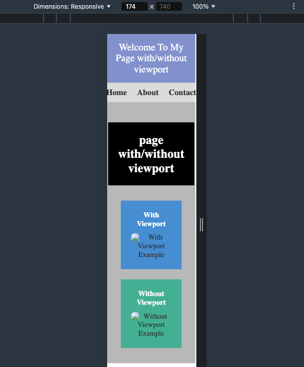
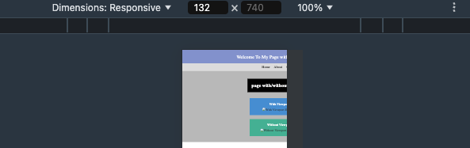
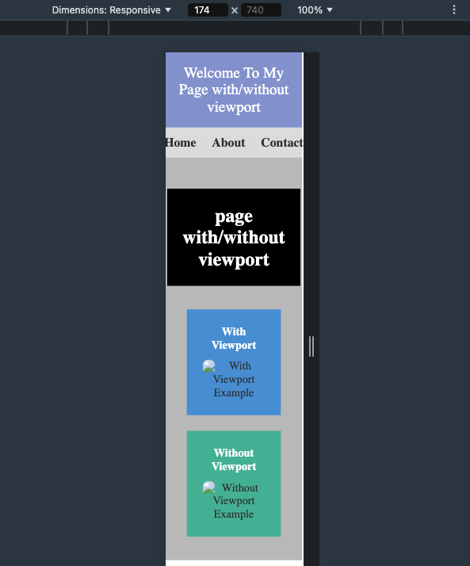
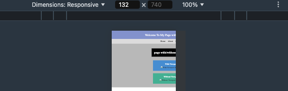

Page with/without viewport
With Viewport
Without Viewport
It is a web development approach that ensures web pages look good and are usable on devices of all screen sizes, from desktops to mobile phones.
Due to the growing variety of devices (smartphones, laptops, etc.) with different screen sizes and resolutions, there is a need to adapt to each device. This makes it easier for users to navigate and read content, which directly impacts user engagement and retention.
The viewport is crucial in responsive web design as it controls how a web page is displayed on different devices. Essentially, it’s the visible area of a web page, and because mobile devices have smaller screens than desktops, websites need to adapt to these varying sizes to provide an optimal user experience.
Media queries are a feature of CSS that enable the application of styles depending on the characteristics of the user's device, such as screen width, height, orientation, and resolution. Media queries are essential for creating responsive designs that adapt seamlessly to different screen sizes.
Common Media Query Options:
With Viewport
Without Viewport
